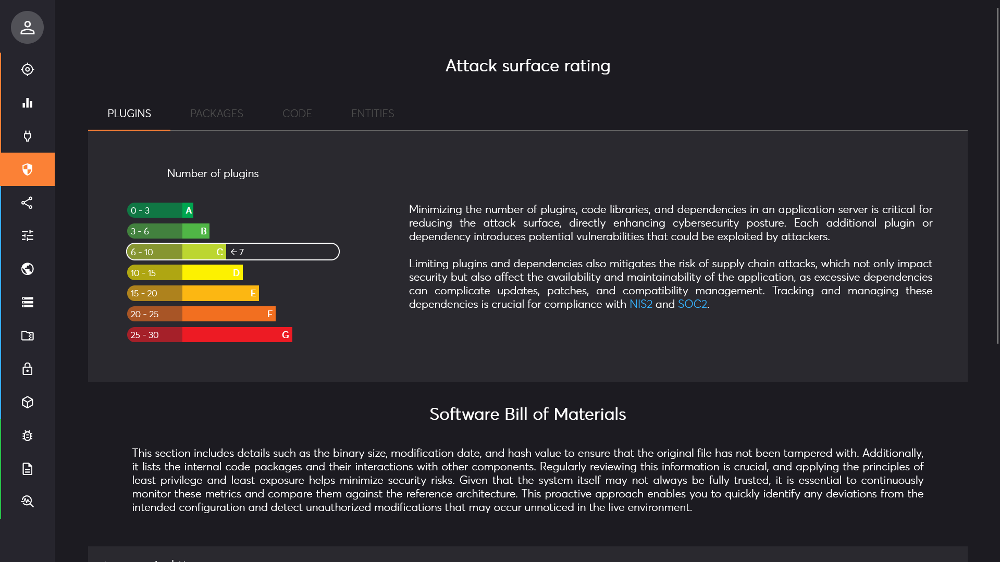
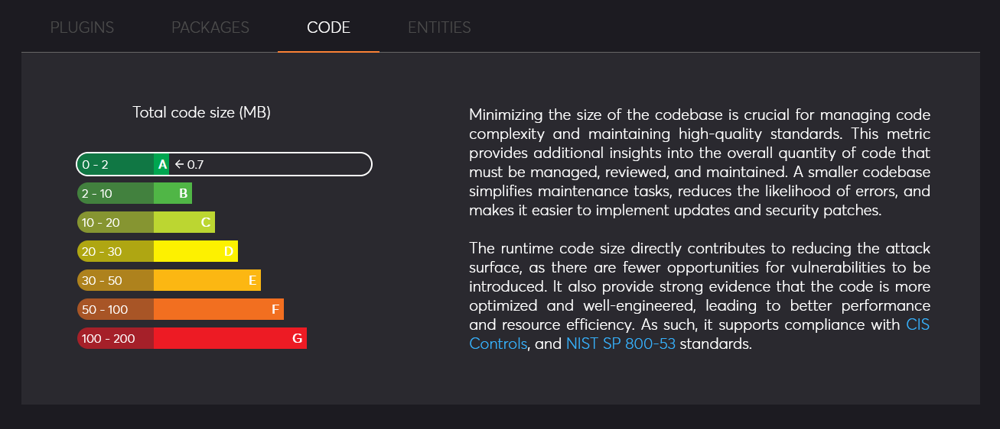
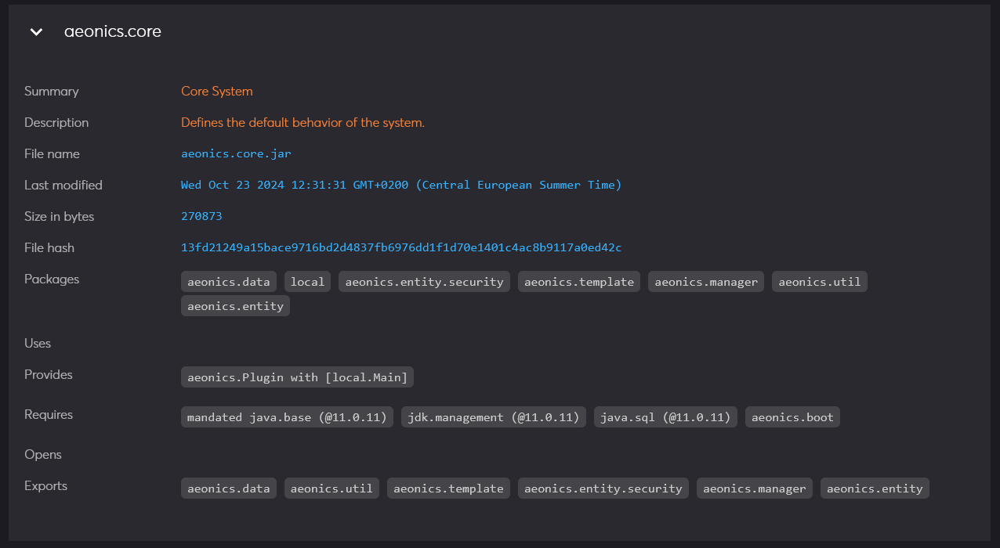

Management Interface Page: Security
Description
This page displays various cybersecurity-related indicators based on the realtime observation of the system. More than a static analysis or an offline reporting as it should be, the system has the ability to run an auto-diagnostic and display the information as it is currently deployed on the system.

Attack surface rating
The top section of the page regroups 4 essential indicators to evaluate the potential attack surface of your system. It provides a global rating
from A (best) to G (worst). The attack surface refers to all the points where an unauthorized user could interact with
or exploit the system. It is an evaluation based on the complexity of the system derived from several key factors.
While this rating is critical for assessing risk in regard to EU NIS2 directive or ISO 27001 standard,
it should not be seen as a guarantee of security, as other factors can also influence the overall resilience of the system.
Note that a the rating itself does not mean your system is at risk nor safe, it is a reference point that can be used to evaluate your security posture and assess the impacts of updates and new deployments.
- Plugins: this indicator is based on the numbers of loaded plugins and dependencies of the system. Lower is better.
- Packages: this indicator is based on the total numbers of code packages across all plugins. This is useful because some plugins may offer bundled capabilities that can quickly grow out of hands. Lower is better.
- Code: this indicator is based on the total size in bytes of all plugins loaded in the system. This is important as it gives an estimate of the volume of code paths and overall complexity to assess vulnerabilities and maintain the code base. Lower is better.
- Entities: this indicator is based the number of entities loaded in the system. This is important because it evaluates your ability to track the behavior of the entire system and proactively detect weaknesses. Lower is better.

Software Bill of Materials
The bottom part of the page is a fully detailed software bill of materials of the system and is detailed per plugin.
A Software Bill of Materials (SBOM) is a detailed, structured list of all components, libraries, dependencies, and other elements used in building a software application. It provides transparency into the software’s supply chain, helping organizations identify vulnerabilities, manage licenses, and ensure the integrity of the code by tracking the origin and version of each component.
A SBOM is essential to define a Vulnerability Exploitability eXchange (VEX) which is a form of security advisory that indicates whether a product or products are affected by a known vulnerability or vulnerabilities.
Each plugin archive is listed with its last modification date, total binary size and computed checksum in blue color. This helps tracking any tempering or alterations to the codebase.
Additional details include:
- Packages: all the code packages that are declared in that plugin.
- Uses: the service interfaces that are declared within that plugin so that other plugins can provide an implementation.
- Provides: the implementation of a service that can be used by another plugin.
- Requires: the explicit module dependencies that are required by that plugin.
- Opens: the code modules that the plugin wants to gain privileged access to. This is generally a security mispractice.
- Exports: the code packages that the plugin makes available for other plugins to require.
